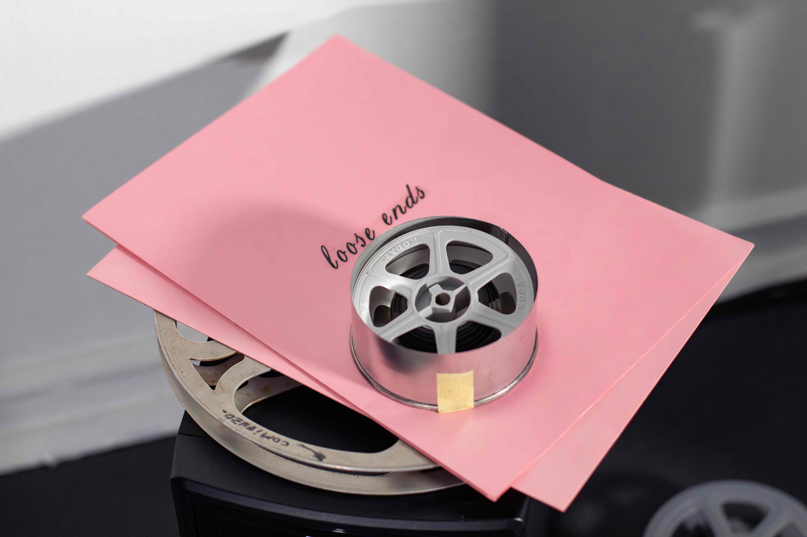
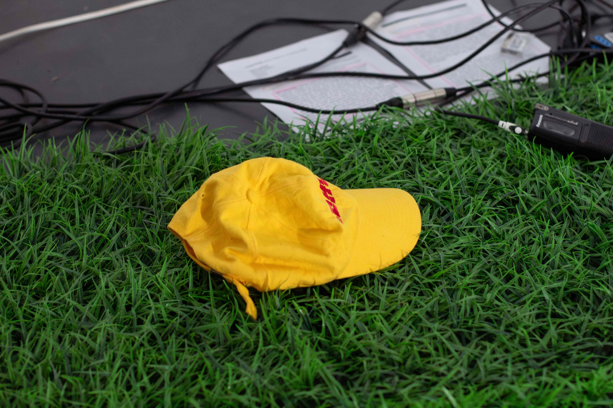
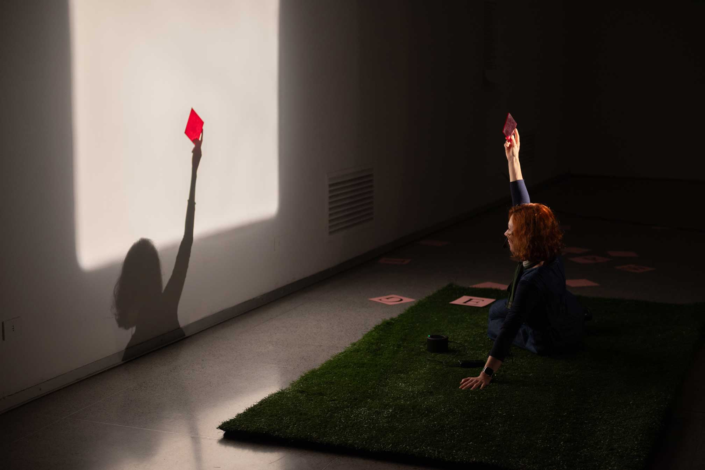
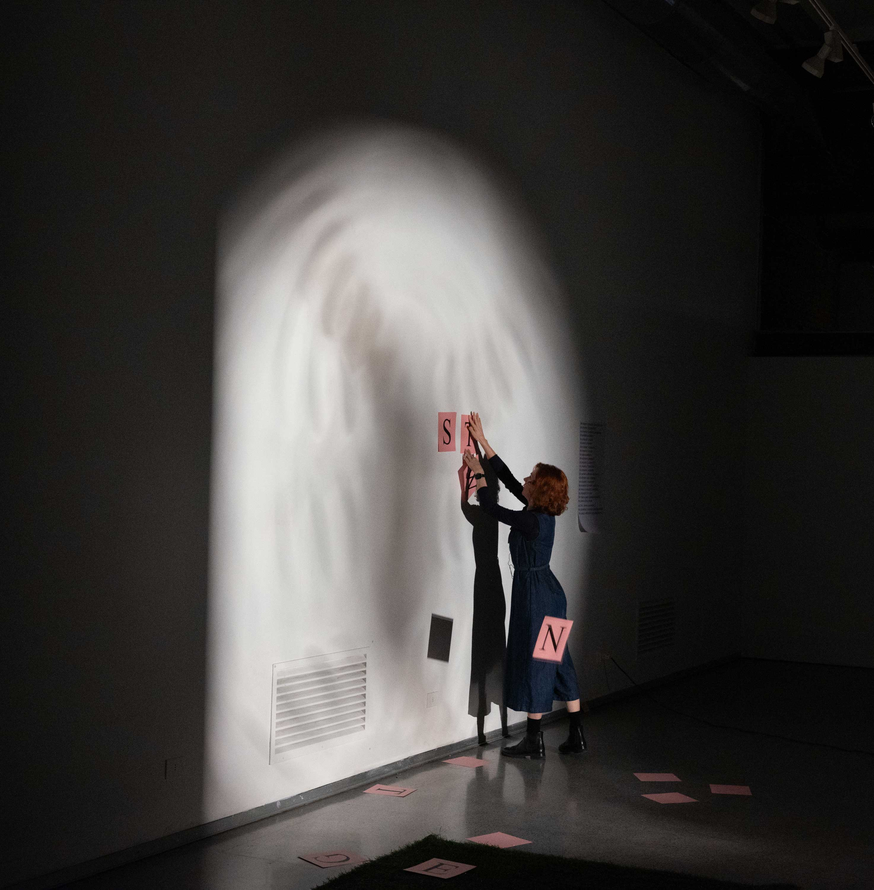
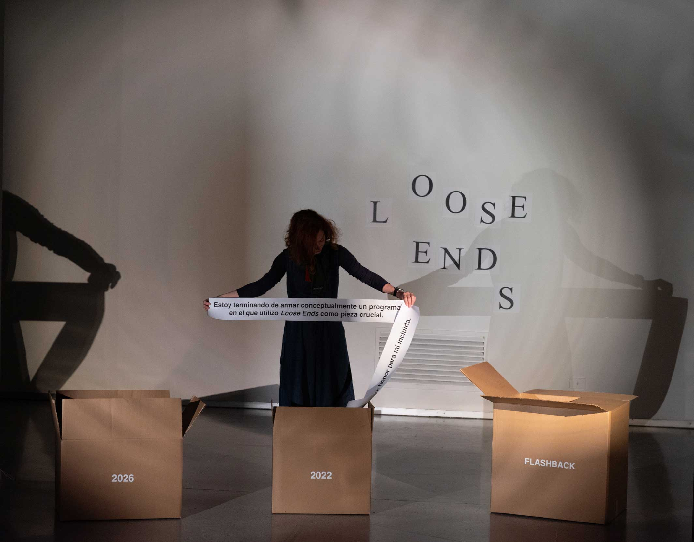
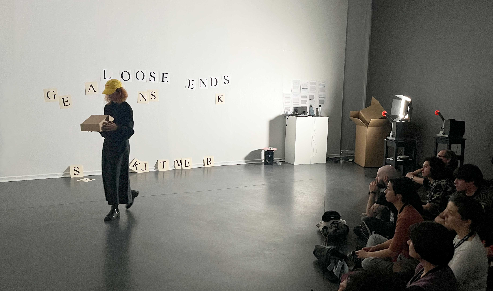
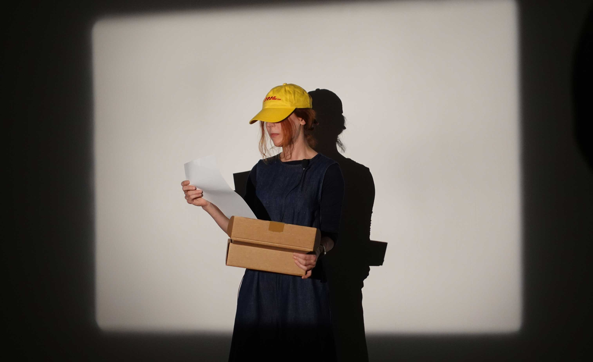

Photos by Joaquin Garrido at FIC Valdivia 2025, Tzuhan Hung at Museo de Arte Abstracto Español in Cuenca 2026, and by Sebastián Angiolini at Centro Cultural de España en Montevideo, 2026
Loose Ends (smaller than the least... and it almost never was)
2024 — 25
Performance
Mixed media
50 mins
Performed at Cineteca, Matadero Madrid; Galería Réplica, 32 FIC Valdivia (Chile); Museo de Arte Abstracto Español, Cuenca; and Centro Cultural de España en Montevideo (Uruguay)
Developed within EXPERIMENTA, research project of the Universidad de Castilla-La Mancha funded by MICIU/AEI and FEDER, EU
The work operates as a spectral presence - what remains when the material support disappears. The performance functions as both memorial practice and counter-archive, where absence becomes generative rather than final. By enunciating its own imposibility, Loose Ends questions the boundaries between presence and disappearance, materiality and memory, challenging linear narratives of completion and loss while insisting on dematerialised modes of cinematic existence.
* Erik Bullot, Cine de lo posible (La Fuga / Metales pesados, 2021)